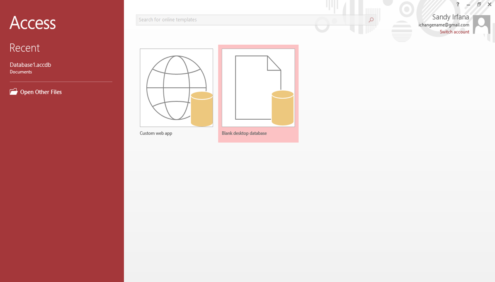
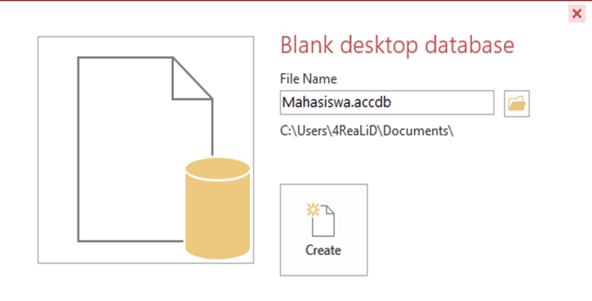
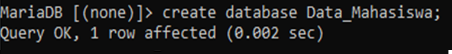
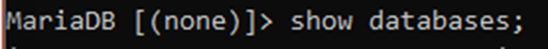

DATABASE
Database, adalah kumpulan dari tabel. Satu tabel merepresentasikan suatu entitas tertentu. Suatu entitas terdiri atas beberapa atribut.
1. Pembuatan Database Menggunakan Microsoft Access
Microsoft Access adalah sebuah program aplikasi basis data computer rasional. Yang ditujukan untuk kalangan rumahan dan Perusahaan kecil hingga menengah.
- Buka Microsoft Access 
- Save File Terlebih Dahulu 
- Pilih Create, Group Tables. Lalu Klik Table Design Isi Field Untuk Tabel Yang Ingin Dibuat, Misalnya Tabel Mahasiswa
- Klik Data_Mahasiswa pada All Access Objects
- Pilih Tab Field, Lalu Klik View Dan Pilih ’Datasheet View’ Agar Dapat Mengisi Record Pada Field
- Isikan Record Pada Field Yang Tersedia


2. Pembuatan Database Menggunakan Command Prompt
2.1 MySQL
Sedikit berbeda dari Ms.Access, My Structured Query Language (MySQL) merupakan program yang berjalan sebagai server untuk menyediakan multi-user agar dapat mengakses ke sejumlah database. Salah satunya adalah website yang tentu saja membutuhkan database server atau hosting untuk menampung berbagai macam informasi.
- Database Language
- Mendefinisikan Basis Data (Data Definition Languange)
- Memanipulasi Basis Data (Data Manipulation Languange)
- Melakukan Operasi-Operasi Tertentu Pada Basis Data
2.2 XAMPP
Perangkat yang dapat menggabungkan 3 aplikasi kedalam satu paket (Apache, MySQL, dan PHPMyAdmin). XAMPP bisa digunakan untuk pengembangan website berbasis PHP dan juga sebagai server untuk local dalam pembuatan database dengan mySQL.
- Buka Aplikasi XAMPP
- Aktifkan Mysql Dan Apache Dengan Cara Klik Tombol ‘Start’
- Masuk Ke Command Prompt Dengan Cara klik Tombol Windows +R Kemudian Ketikkan Cmd Lalu Enter
-
Masuk ke dalam sistem MySQL dengan mengetikkan kode berikut :
cd\
cd xampp
cd mysql
cd bin - Jika berhasil, maka akan ada tulisan Welcome to the MySQL Monitor
- Membuat Database Dengan Memasukkan Code, create database namadatabase; 
- Jika Ingin Melihat Daftar Database Masukkan Code, show databases; 
- Lalu Gunakan Database Yang Sudah Dibuat Dengan Memsukkan Code, use namadatabase;
- Setelah Itu Membuat Tabel “informasi” Dengan Memasukkan Code, Create table informasi
- Jika Ingin Melihat Daftar Tabel Yang Sudah Dibuat Masukkan Code, Show tables;
- Jika Ingin Melihat Struktur Tabel Masukkan Code, Describe namatabel;
- Isi Record Dari Tabel Dengan Memasukkan Code, insert into informasi values
- Jika Ingin Memeriksa Kembali Tabel Yang Sudah Dibuat Masukkan Code, select * from informasi;